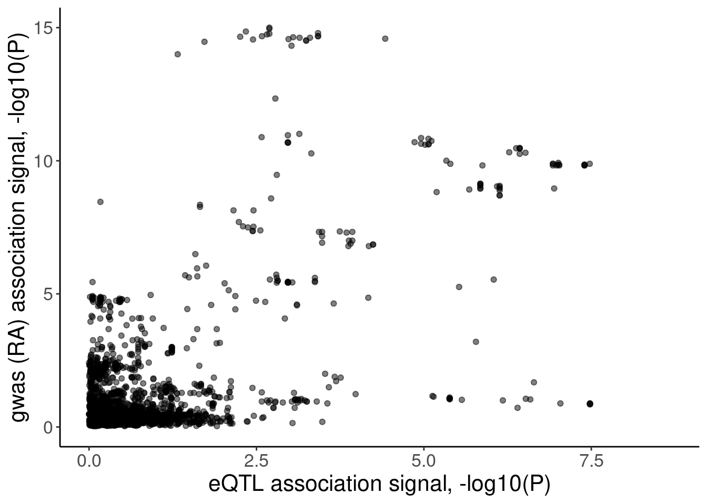
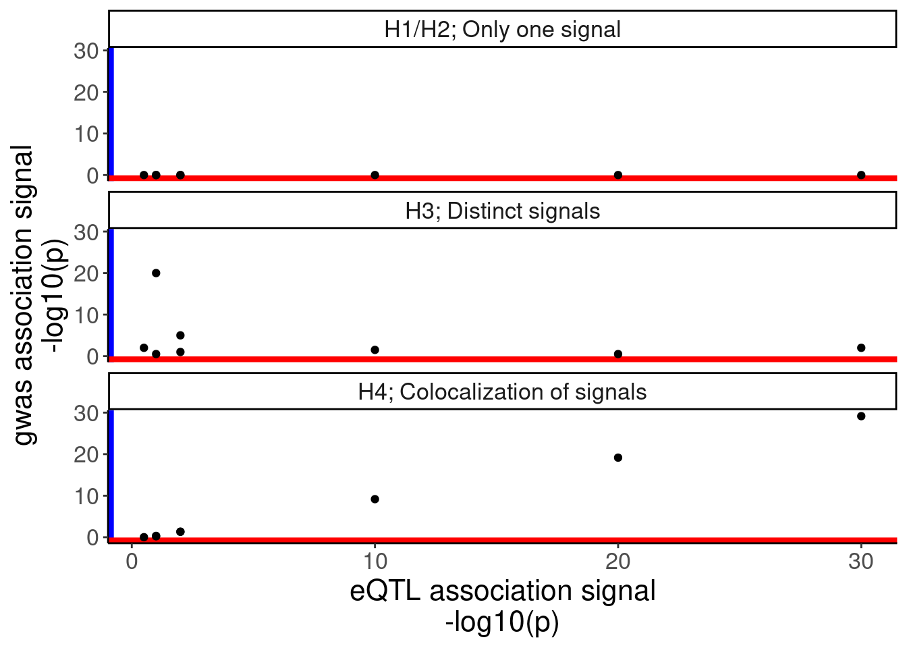

20230808_GWAS_sQTLs_QQ_and_ColocExample
2023-08-08
Last updated: 2023-08-28
Checks: 6 1
Knit directory:
ChromatinSplicingQTLs/analysis/
This reproducible R Markdown analysis was created with workflowr (version 1.7.0). The Checks tab describes the reproducibility checks that were applied when the results were created. The Past versions tab lists the development history.
The R Markdown is untracked by Git. To know which version of the R
Markdown file created these results, you’ll want to first commit it to
the Git repo. If you’re still working on the analysis, you can ignore
this warning. When you’re finished, you can run
wflow_publish to commit the R Markdown file and build the
HTML.
Great job! The global environment was empty. Objects defined in the global environment can affect the analysis in your R Markdown file in unknown ways. For reproduciblity it’s best to always run the code in an empty environment.
The command set.seed(20191126) was run prior to running
the code in the R Markdown file. Setting a seed ensures that any results
that rely on randomness, e.g. subsampling or permutations, are
reproducible.
Great job! Recording the operating system, R version, and package versions is critical for reproducibility.
Nice! There were no cached chunks for this analysis, so you can be confident that you successfully produced the results during this run.
Great job! Using relative paths to the files within your workflowr project makes it easier to run your code on other machines.
Great! You are using Git for version control. Tracking code development and connecting the code version to the results is critical for reproducibility.
The results in this page were generated with repository version a4ceb39. See the Past versions tab to see a history of the changes made to the R Markdown and HTML files.
Note that you need to be careful to ensure that all relevant files for
the analysis have been committed to Git prior to generating the results
(you can use wflow_publish or
wflow_git_commit). workflowr only checks the R Markdown
file, but you know if there are other scripts or data files that it
depends on. Below is the status of the Git repository when the results
were generated:
Ignored files:
Ignored: .DS_Store
Ignored: .Rhistory
Ignored: .Rproj.user/
Ignored: analysis/.Rhistory
Ignored: code/-
Ignored: code/.DS_Store
Ignored: code/.MYB.tracks.ini.swp
Ignored: code/.RData
Ignored: code/._report.html
Ignored: code/.ipynb_checkpoints/
Ignored: code/.snakemake/
Ignored: code/APA_Processing/
Ignored: code/Alignments/
Ignored: code/ChromHMM/
Ignored: code/ENCODE/
Ignored: code/ExpressionAnalysis/
Ignored: code/ExtractPhenotypeBedByGenotype.py
Ignored: code/FastqFastp/
Ignored: code/FastqFastpSE/
Ignored: code/FastqSE/
Ignored: code/FineMapping/
Ignored: code/GTEx/
Ignored: code/Genotypes/
Ignored: code/H3K36me3_CutAndTag.pdf
Ignored: code/IntronSlopes/
Ignored: code/LR.bed
Ignored: code/LR.seq.bed
Ignored: code/LongReads/
Ignored: code/MYB.tracks.ini
Ignored: code/Metaplots/
Ignored: code/Misc/
Ignored: code/MiscCountTables/
Ignored: code/Multiqc/
Ignored: code/Multiqc_chRNA/
Ignored: code/NonCodingRNA/
Ignored: code/NonCodingRNA_annotation/
Ignored: code/PairwisePi1Traits.P.all.txt.gz
Ignored: code/PeakCalling/
Ignored: code/Phenotypes/
Ignored: code/PlotGruberQTLs/
Ignored: code/PlotQTLs/
Ignored: code/ProCapAnalysis/
Ignored: code/QC/
Ignored: code/QTL_SNP_Enrichment/
Ignored: code/QTLs/
Ignored: code/RPKM_tables/
Ignored: code/ReadLengthMapExperiment/
Ignored: code/ReadLengthMapExperimentResults/
Ignored: code/ReadLengthMapExperimentSpliceCounts/
Ignored: code/ReferenceGenome/
Ignored: code/Rplots.pdf
Ignored: code/Session.vim
Ignored: code/SmallMolecule/
Ignored: code/SplicingAnalysis/
Ignored: code/TODO
Ignored: code/Tehranchi/
Ignored: code/alias/
Ignored: code/bigwigs/
Ignored: code/bigwigs_FromNonWASPFilteredReads/
Ignored: code/config/.DS_Store
Ignored: code/config/._.DS_Store
Ignored: code/config/.ipynb_checkpoints/
Ignored: code/config/config.local.yaml
Ignored: code/dag.pdf
Ignored: code/dag.png
Ignored: code/dag.svg
Ignored: code/data/
Ignored: code/debug.ipynb
Ignored: code/debug_python.ipynb
Ignored: code/deepTools/
Ignored: code/featureCounts/
Ignored: code/featureCountsBasicGtf/
Ignored: code/genome_config.yaml
Ignored: code/gwas_summary_stats/
Ignored: code/hyprcoloc/
Ignored: code/igv_session.xml
Ignored: code/isoseqbams/
Ignored: code/log
Ignored: code/logs/
Ignored: code/notebooks/.ipynb_checkpoints/
Ignored: code/pi1/
Ignored: code/polyA.Splicing.Subset_YRI.NominalPassForColoc.bed.bgz
Ignored: code/rules/.ipynb_checkpoints/
Ignored: code/rules/OldRules/
Ignored: code/rules/notebooks/
Ignored: code/salmontest/
Ignored: code/scratch/
Ignored: code/scripts/.ipynb_checkpoints/
Ignored: code/scripts/GTFtools_0.8.0/
Ignored: code/scripts/__pycache__/
Ignored: code/scripts/liftOverBedpe/liftOverBedpe.py
Ignored: code/snakemake.dryrun.log
Ignored: code/snakemake.log
Ignored: code/snakemake.sbatch.log
Ignored: code/snakemake_profiles/slurm/__pycache__/
Ignored: code/test.introns.bed
Ignored: code/test.introns2.bed
Ignored: code/test.log
Ignored: code/tracks.xml
Ignored: data/.DS_Store
Ignored: data/GWAS_catalog_summary_stats_sources/._list_gwas_summary_statistics_6_Apr_2022-10.csv
Ignored: data/GWAS_catalog_summary_stats_sources/._list_gwas_summary_statistics_6_Apr_2022-11.csv
Ignored: data/GWAS_catalog_summary_stats_sources/._list_gwas_summary_statistics_6_Apr_2022-2.csv
Ignored: data/GWAS_catalog_summary_stats_sources/._list_gwas_summary_statistics_6_Apr_2022-3.csv
Ignored: data/GWAS_catalog_summary_stats_sources/._list_gwas_summary_statistics_6_Apr_2022-4.csv
Ignored: data/GWAS_catalog_summary_stats_sources/._list_gwas_summary_statistics_6_Apr_2022-5.csv
Ignored: data/GWAS_catalog_summary_stats_sources/._list_gwas_summary_statistics_6_Apr_2022-6.csv
Ignored: data/GWAS_catalog_summary_stats_sources/._list_gwas_summary_statistics_6_Apr_2022-7.csv
Ignored: data/GWAS_catalog_summary_stats_sources/._list_gwas_summary_statistics_6_Apr_2022-8.csv
Ignored: data/GWAS_catalog_summary_stats_sources/._list_gwas_summary_statistics_6_Apr_2022.csv
Ignored: data/Metaplots/.DS_Store
Untracked files:
Untracked: analysis/20230808_GWAS_sQTLs_QQ_and_ColocExample.Rmd
Untracked: code/envs/r_scattermore.yml
Untracked: code/scripts/CalculatePi1_PlotHeatmap.R
Untracked: code/scripts/Clasify_sQTLs.R
Untracked: code/scripts/MolQTL_GWAS_QQ.R
Untracked: code/scripts/Plot_eQTL_QQ.R
Untracked: output/GwasLociConcordance.tsv
Untracked: output/GwasLociConcordanceWithNonEqtls.tsv
Untracked: output/GwasLoci_with_sQTL_and_hQTL.tsv
Unstaged changes:
Modified: analysis/20230723_hQTL_sQTL_GwasConcordance.Rmd
Modified: analysis/MakeFinalFigs_Fig2.Rmd
Modified: analysis/MakeFinalFigs_Fig3.Rmd
Modified: analysis/MakeFinalFigs_Fig4.Rmd
Modified: code/rules/CalculatePi1.smk
Modified: code/rules/GWAS_PrepForColoc.smk
Modified: code/scripts/CheckConcordanceOfGeneTraitEffects.py
Modified: code/scripts/GenometracksByGenotype
Modified: output/GwasLoci_with_sQTL_and_hQTL_eQTLs.tsv
Note that any generated files, e.g. HTML, png, CSS, etc., are not included in this status report because it is ok for generated content to have uncommitted changes.
There are no past versions. Publish this analysis with
wflow_publish() to start tracking its development.
Intro
First write out u-sQTLs and p-sQTLs
PC1.PossibleValues <- c("polyA.Splicing")
PC2.PossibleValues <-c("Expression.Splicing", "H3K4ME3", "H3K36ME3", "H3K27AC", "H3K4ME1")
dat <- fread("../code/pi1/PairwisePi1Traits.P.all.txt.gz") %>%
filter((PC1 %in% PC1.PossibleValues) & (PC2 %in% PC2.PossibleValues))
Intron.Annotations <- read_tsv("../data/IntronAnnotationsFromYang.Updated.tsv.gz") %>%
mutate(IntronName = paste(chrom, start, end, strand, sep=":"))
dat.sQTLs.eQTLs.ForScatter <- dat %>%
mutate(IntronName = str_replace(P1, "^(.+?:)clu_.+?([+-])$", "chr\\1\\2")) %>%
mutate(ClusterName = str_replace(P1, "^(.+?:).+?(clu_.+?[+-])$", "chr\\1\\2")) %>%
left_join(Intron.Annotations)
PC1.filter = c("polyA.Splicing")
PC2.filter = c( "Expression.Splicing")
PC2.SignificanceFilter <- c("H3K4ME3", "H3K27AC", "H3K36ME3")Now as before for the beta/beta scatter plots, filter out sQTLs for which there are nominally significant hQTLs. Then classify sQTLs as u-sQTL and p-sQTL..
Intron.Annotations$SuperAnnotation %>% unique()[1] "AnnotatedJunc_NoncodingGene"
[2] "UnannotatedJunc_NoncodingJunc"
[3] "AnnotatedJunc_UnproductiveCodingGene"
[4] "AnnotatedJunc_ProductiveCodingGene"
[5] "UnannotatedJunc_UnproductiveCodingGene"
[6] "UnannotatedJunc_ProductiveCodingGene" sQTLs.ByType <- dat.sQTLs.eQTLs.ForScatter %>%
filter(PC1 %in% PC1.filter) %>%
group_by(P1) %>%
filter(!any((PC2 %in% PC2.SignificanceFilter) & (trait.x.p.in.y < 0.01))) %>%
ungroup() %>%
filter(PC2 %in% PC2.filter) %>%
mutate(SuperAnnotation.simplified = recode(SuperAnnotation, "UnannotatedJunc_UnproductiveCodingGene"="Unproductive", "AnnotatedJunc_ProductiveCodingGene"="Productive", "AnnotatedJunc_UnproductiveCodingGene"="Unproductive", "UnannotatedJunc_ProductiveCodingGene"="Productive")) %>%
group_by(ClusterName) %>%
mutate(sQTL.type = case_when(
any(SuperAnnotation.simplified == "Unproductive") ~ "u-sQTL",
all(SuperAnnotation.simplified == "Productive") ~ "p-sQTL",
TRUE ~ "Other"
)) %>%
slice(which.min(p_permutation.x)) %>%
ungroup() %>%
filter(!sQTL.type=="Other")Some sanity checking…
count(sQTLs.ByType, sQTL.type)# A tibble: 2 × 2
sQTL.type n
<chr> <int>
1 p-sQTL 1469
2 u-sQTL 1783sQTLs.ByType %>%
ggplot(aes(x=beta.x, y=x.beta.in.y, color=SuperAnnotation)) +
geom_point(alpha=0.1) +
geom_vline(xintercept=0, linetype='dashed') +
geom_hline(yintercept=0, linetype='dashed') +
scale_color_manual(values=c("Productive"="#1f78b4", "Unproductive"="#e31a1c")) +
theme(strip.text = element_text(size = 12), legend.position='none') +
labs(caption = "FDR<10% sQTLs. sQTLs with nominal P<0.01 for H3K36me3, H3K27Ac, or H3K4me3 removed\nOnly top sQTL per cluster plotted", y="host gene eQTL beta", x="sQTL beta") +
facet_grid(sQTL.type~SuperAnnotation.simplified)Now let’s also get some top SNPs for eQTLs and H3K27Ac QTLs…
gwas.trait.accession <- "IMSGC2019"
molQTL.gwas.P <- fread(paste0("../code/gwas_summary_stats/MolQTLIntersections/", gwas.trait.accession, ".bed.gz"), col.names = c("chrom", "varPos", "GWAS.P", "molQTL.name", "molQTL.P", "strand", "molQTL.beta", "molQTL.se", "molQTL.q", "varID", "overlap")) %>%
separate(molQTL.name, into=c("PhenotypeClass", "MolPhenotypeName"), sep = ";")
gwas.P <- fread(paste0("../code/gwas_summary_stats/sorted_index_summarystat_hg38beds/", gwas.trait.accession, ".bed.gz"), select = 4, col.names = "GWAS.P") %>%
mutate(PhenotypeClass = "All SNPs")
molQTL.gwas.P$PhenotypeClass %>% unique() [1] "APA_Nuclear" "H3K27AC"
[3] "MetabolicLabelled.30min.Splicing" "H3K4ME1"
[5] "polyA.Splicing" "polyA.Splicing.Subset_YRI"
[7] "MetabolicLabelled.60min.Splicing" "chRNA.Splicing"
[9] "chRNA.Splicing.Order" "CTCF"
[11] "APA_Total" "chRNA.Expression_ncRNA"
[13] "DNaseISensitivity" "H3K36ME3_ncRNA"
[15] "chRNA.IER" "polyA.IER"
[17] "H3K36ME3" "Expression.Splicing"
[19] "MetabolicLabelled.30min" "polyA.IER.Subset_YRI"
[21] "ProCap" "H3K4ME3"
[23] "MetabolicLabelled.60min" "chRNA.Expression.Splicing"
[25] "Expression.Splicing.Subset_YRI" "MetabolicLabelled.60min.IER"
[27] "chRNA.Slopes" "MetabolicLabelled.30min.IER" PhenotypeClass.filter <- c("Expression.Splicing.Subset_YRI", "Expression.Splicing", "polyA.Splicing", "H3K27AC")
QQ.gwas <- bind_rows(
molQTL.gwas.P %>%
filter(PhenotypeClass %in% PhenotypeClass.filter) %>%
filter(molQTL.q < 0.1) %>%
dplyr::select(PhenotypeClass, GWAS.P),
gwas.P %>%
sample_n(1E5)
) %>%
dplyr::select(SNP_group = PhenotypeClass, GWAS.P) %>%
group_by(SNP_group) %>%
mutate(MyRank = rank(GWAS.P, ties.method='random')) %>%
mutate(ExpectedP = MyRank/(max(MyRank) + 1)) %>%
ungroup() %>%
mutate(SNP_group = relevel(factor(SNP_group), "All SNPs")) %>%
arrange(SNP_group) %>%
ggplot(aes(x=-log10(ExpectedP), y=-log10(GWAS.P), color=SNP_group)) +
geom_abline(slope=1, intercept=0) +
geom_point() +
labs(y="-log10(ObservedP)", title="GWAS QQ plot", caption="GWAS SNPs sub-sampled to 100K for plotting speed")
QQ.gwasQQ.gwas +
coord_cartesian(ylim=c(0,20))Add some more control SNPs
ControlSNPs <- fread(paste0("../code/gwas_summary_stats/MolQTLIntersections_ControlSNPs/", gwas.trait.accession, "/ALL.txt.gz"), col.names=c("GWAS.P", "PhenotypeClassControl"))
ControlSNPs$PhenotypeClassControl %>% unique() [1] "Expression.Splicing" "Expression.Splicing.Subset_YRI"
[3] "chRNA.Expression.Splicing" "MetabolicLabelled.30min"
[5] "MetabolicLabelled.60min" "CTCF"
[7] "H3K27AC" "H3K4ME3"
[9] "H3K4ME1" "H3K36ME3"
[11] "H3K36ME3_ncRNA" "ProCap"
[13] "polyA.Splicing" "polyA.Splicing.Subset_YRI"
[15] "chRNA.Splicing" "MetabolicLabelled.30min.Splicing"
[17] "MetabolicLabelled.60min.Splicing" "chRNA.Expression_ncRNA"
[19] "APA_Nuclear" "APA_Total"
[21] "polyA.IER" "polyA.IER.Subset_YRI"
[23] "chRNA.IER" "MetabolicLabelled.30min.IER"
[25] "MetabolicLabelled.60min.IER" "chRNA.Slopes"
[27] "chRNA.Splicing.Order" "DNaseISensitivity" QQ.gwas.dat <- bind_rows(
molQTL.gwas.P %>%
filter(PhenotypeClass %in% PhenotypeClass.filter) %>%
filter(molQTL.q < 0.1) %>%
left_join(
sQTLs.ByType %>%
dplyr::select(MolPhenotypeName=P1, sQTL.type, PhenotypeClass = PC1)
) %>%
mutate(PhenotypeClass = case_when(
!is.na(sQTL.type) ~ sQTL.type,
TRUE ~ PhenotypeClass
)),
ControlSNPs %>%
filter(PhenotypeClassControl %in% c("polyA.Splicing", "H3K27AC", "Expression.Splicing")) %>%
mutate(PhenotypeClass = recode(PhenotypeClassControl, "polyA.Splicing"="Intronic SNPS", "H3K27AC"="H3K27AC peak SNPs", "Expression.Splicing"="genic SNPs")) %>%
filter(!PhenotypeClass=="Intronic SNPS") %>%
dplyr::select(-PhenotypeClassControl),
gwas.P %>%
sample_n(1E5)
) %>%
dplyr::select(SNP_group = PhenotypeClass, GWAS.P) %>%
# pull(SNP_group) %>% unique()
group_by(SNP_group) %>%
mutate(MyRank = rank(GWAS.P, ties.method='random')) %>%
mutate(ExpectedP = MyRank/(max(MyRank) + 1)) %>%
ungroup() %>%
mutate(SNP_group = relevel(factor(SNP_group), "All SNPs")) %>%
arrange(SNP_group)
QQ.gwas.dat %>%
count(SNP_group)# A tibble: 9 × 2
SNP_group n
<fct> <int>
1 All SNPs 100000
2 Expression.Splicing 6936
3 Expression.Splicing.Subset_YRI 1641
4 H3K27AC 4947
5 H3K27AC peak SNPs 100000
6 genic SNPs 100000
7 p-sQTL 866
8 polyA.Splicing 14921
9 u-sQTL 1089QQ.gwas <-
QQ.gwas.dat %>%
filter(!SNP_group=="polyA.Splicing") %>%
ggplot(aes(x=-log10(ExpectedP), y=-log10(GWAS.P), color=SNP_group)) +
geom_abline(slope=1, intercept=0) +
geom_point() +
scale_color_brewer(palette = "Set3") +
# scale_color_manual(values=
# c("genic SNPs"="#969696", "All SNPs"="#000000", "Unproductive sQTL cluster"="#e31a1c", "Productive sQTL cluster"="#1f78b4", "H3K27AC"="#6a3d9a", "H3K27AC peak SNPs"="#cab2d6", "Expression.Splicing"="#ff7f00"),
# labels=c("genic SNPs"="genic SNPs", "All SNPs"="All SNPs", "Unproductive sQTL cluster"="Unproductive sQTL", "Productive sQTL cluster"="Productive sQTL", "H3K27AC"="H3K27AC QTL", "H3K27AC peak SNPs"="H3K27AC peak SNPs", "Expression.Splicing"="eQTL")) +
labs(y="-log10(ObservedP)", title="MS GWAS QQ plot", caption="GWAS SNPs sub-sampled to 100K for plotting speed", fill="SNP category")
QQ.gwas
QQ.gwas +
coord_cartesian(ylim=c(0,20))In the snakemake I added rules to make all these qq-plots…
Now let’s move on.
Example u-sQTL gwas colocalization
beta beta for sQTL/eQTL among Scatter
gwas.traits <- read_tsv("../code/config/gwas_table.tsv") %>%
dplyr::rename(GWAS.accession=gwas, gwas.trait=trait) %>%
mutate(gwas.trait = recode(gwas.trait, "rheumatoid arthritis"="Rheumatoid arthritis"))
PhenotypeRecodes = c("H3K36ME3"="hQTL", "H3K27AC"="hQTL", "H3K4ME3"="hQTL", "H3K4ME1"="hQTL",
"Expression.Splicing"="eQTL", "chRNA.Expression.Splicing"="chRNA eQTL",
"APA_Nuclear"="APA QTL", "APA_Total"="APA QTL", "polyA.Splicing"="sQTL", "GWAS"="GWAS")
PhenotypeRecodes.df <- data.frame(PhenotypeRecodes) %>%
rownames_to_column("PhenotypeClass")
hyprcoloc.results <- read_tsv("../code/hyprcoloc/Results/ForGWASColoc/GWASColoc_ChromatinAPAAndRNA/results.txt.gz") %>%
dplyr::rename(GWAS.Loci = GWASLeadSnpChrom_Pos_RefAllele_AltAllele_rsID_trait) %>%
separate(GWAS.Loci, into=c("GWAS.LeadSNP.Chrom", "GWAS.LeadSNP.Pos", "GWAS.accession"), sep="_", remove=F) %>%
separate_rows(ColocalizedTraits, sep = ",") %>%
mutate(IsColocalizedWithSomething = !ColocalizedTraits == "None") %>%
mutate(Trait = if_else(IsColocalizedWithSomething, ColocalizedTraits, DroppedTrait)) %>%
dplyr::select(-DroppedTrait, -ColocalizedTraits) %>%
mutate(Trait = str_replace_all(Trait, " ", "")) %>%
mutate(GWAS.Loci = str_replace_all(GWAS.Loci, " ", "")) %>%
mutate(Trait = if_else(Trait == GWAS.Loci, paste("GWAS",GWAS.Loci,sep = ";"),Trait)) %>%
separate(Trait, into=c("PhenotypeClass", "Phenotype"), sep=";", remove=F) %>%
group_by(GWAS.Loci, HyprcolocIteration) %>%
mutate(ColocalizedClusterContainsGWASTrait = any(PhenotypeClass=="GWAS") & IsColocalizedWithSomething) %>%
ungroup() %>%
inner_join(gwas.traits %>%
dplyr::select(1:2)) %>%
left_join(PhenotypeRecodes.df) %>%
mutate(PhenotypeRecodes = if_else(is.na(PhenotypeRecodes), PhenotypeClass, PhenotypeRecodes)) %>%
filter(!PhenotypeRecodes == "APA QTL") %>%
group_by(GWAS.Loci, HyprcolocIteration) %>%
filter(any(ColocalizedClusterContainsGWASTrait) | PhenotypeClass=="GWAS") %>%
mutate(Category = case_when(
all(ColocalizedClusterContainsGWASTrait==FALSE) | all(is.na(HyprcolocIteration)) ~ "No molQTL colocs",
all(PhenotypeRecodes %in% c("GWAS", "hQTL")) ~ "Only hQTL colocs",
all(PhenotypeRecodes %in% c("GWAS", "eQTL")) ~ "Only eQTL colocs",
all(PhenotypeRecodes %in% c("GWAS", "eQTL", "hQTL", "chRNA eQTL")) ~ "hQTL+eQTL colocs",
all(PhenotypeRecodes %in% c("GWAS", "sQTL")) ~ "sQTL colocs",
all(PhenotypeRecodes %in% c("GWAS", "sQTL", "chRNA eQTL", "eQTL")) ~ "sQTL+eQTL colocs",
# all(PhenotypeRecodes %in% c("GWAS", "sQTL", "chRNA eQTL", "eQTL", "hQTL")) ~ "sQTL+eQTL+hQTL colocs",
TRUE ~ "Other"
)) %>%
ungroup()
sQTLs <- read_tsv("../code/SplicingAnalysis/sQTLs_p_and_u.Full.tsv.gz")
hyprcoloc.results %>%
filter(ColocalizedClusterContainsGWASTrait) %>%
inner_join(
sQTLs %>%
dplyr::select(Phenotype=P1,PhenotypeClass=PC1)
) %>%
pull(gwas.trait) %>% unique() %>% sort() [1] "Asthma (adult onset)"
[2] "Asthma (childhood onset)"
[3] "Basophil percentage of granulocytes"
[4] "Basophil percentage of white cells"
[5] "Breast cancer"
[6] "Crohn's disease"
[7] "Eosinophil counts"
[8] "Eosinophil percentage of granulocytes"
[9] "Eosinophil percentage of white cells"
[10] "Granulocyte count"
[11] "Granulocyte percentage of myeloid white cells"
[12] "Hematocrit"
[13] "Hemoglobin concentration"
[14] "High light scatter reticulocyte count"
[15] "High light scatter reticulocyte percentage of red cells"
[16] "Immature fraction of reticulocytes"
[17] "Inflammatory bowel disease"
[18] "Lymphocyte counts"
[19] "Lymphocyte percentage of white cells"
[20] "Mean corpuscular hemoglobin"
[21] "Mean corpuscular hemoglobin concentration"
[22] "Mean corpuscular volume"
[23] "Mean platelet volume"
[24] "Monocyte count"
[25] "Monocyte percentage of white cells"
[26] "Multiple sclerosis"
[27] "Myeloid white cell count"
[28] "Neutrophil count"
[29] "Neutrophil percentage of granulocytes"
[30] "Neutrophil percentage of white cells"
[31] "Platelet count"
[32] "Platelet distribution width"
[33] "Plateletcrit"
[34] "Red blood cell count"
[35] "Red cell distribution width"
[36] "Reticulocyte count"
[37] "Reticulocyte fraction of red cells"
[38] "Rheumatoid arthritis"
[39] "Sum basophil neutrophil counts"
[40] "Sum eosinophil basophil counts"
[41] "Sum neutrophil eosinophil counts"
[42] "Ulcerative colitis"
[43] "White blood cell count"
[44] "White blood cell count (basophil)" DiseaseTraits <- c("Multiple sclerosis", "Ulcerative colitis", "Inflammatory bowel disease", "Rheumatoid arthritis", "Asthma (adult onset)", "Asthma (childhood onset)")
ColocsToConsiderPlotting <- hyprcoloc.results %>%
filter(ColocalizedClusterContainsGWASTrait) %>%
inner_join(
sQTLs %>%
dplyr::select(Phenotype=P1,PhenotypeClass=PC1, everything())
) %>%
filter(sQTL.type=="u-sQTL") %>%
filter(Category=="sQTL+eQTL colocs") %>%
filter(gwas.trait %in% DiseaseTraits)
hyprcoloc.results %>%
filter(ColocalizedClusterContainsGWASTrait) %>%
inner_join(
sQTLs %>%
dplyr::select(Phenotype=P1,PhenotypeClass=PC1, everything())
) %>%
filter(sQTL.type=="u-sQTL")# A tibble: 408 × 51
GWAS.Loci GWAS.LeadSNP.Ch… GWAS.LeadSNP.Pos GWAS.accession HyprcolocIterat…
<chr> <chr> <chr> <chr> <dbl>
1 chr1_15519… chr1 155194689 GCST004131 3
2 chr10_3040… chr10 30401447 GCST004131 2
3 chr16_3009… chr16 30091839 GCST004606 6
4 chr17_4609… chr17 46096136 GCST004606 3
5 chr17_4667… chr17 46676279 GCST004606 2
6 chr17_4667… chr17 46676279 GCST004606 2
7 chr17_4667… chr17 46676279 GCST004606 2
8 chr2_24175… chr2 241759225 GCST004606 7
9 chr9_13643… chr9 136432610 GCST004606 1
10 chr1_95235… chr1 95235667 GCST004616 1
# … with 398 more rows, and 46 more variables: PosteriorColocalizationPr <dbl>,
# RegionalAssociationPr <dbl>, TopCandidateSNP <chr>,
# ProportionPosteriorPrExplainedByTopSNP <dbl>,
# IsColocalizedWithSomething <lgl>, Trait <chr>, PhenotypeClass <chr>,
# Phenotype <chr>, ColocalizedClusterContainsGWASTrait <lgl>,
# gwas.trait <chr>, PhenotypeRecodes <chr>, Category <chr>, GeneLocus <chr>,
# p_permutation.x <dbl>, beta.x <dbl>, beta_se.x <dbl>, …First let’s check out the beta beta scatter for these gwas/eQTL/u-sQTL colocs.
hyprcoloc.results %>%
filter(ColocalizedClusterContainsGWASTrait) %>%
inner_join(
sQTLs %>%
dplyr::select(Phenotype=P1,PhenotypeClass=PC1, everything())
) %>%
filter(sQTL.type=="u-sQTL") %>%
# filter(Category=="sQTL+eQTL colocs")
group_by(gene, SuperAnnotation.simplified, sQTL.type) %>%
filter(abs(x.beta.in.y)==max(abs(x.beta.in.y))) %>%
ungroup() %>%
distinct(gene, SuperAnnotation.simplified, sQTL.type, .keep_all=T) %>%
ggplot(aes(x=beta.x, y=x.beta.in.y)) +
# geom_point() +
geom_abline(slope=-1, intercept = 0) +
geom_text(aes(label=symbol)) +
facet_grid(sQTL.type~SuperAnnotation.simplified~Category) +
theme_bw() +
labs(x="sQTL beta", y="eQTL beta")hyprcoloc.results %>%
filter(ColocalizedClusterContainsGWASTrait) %>%
filter(gwas.trait %in% DiseaseTraits) %>%
inner_join(
sQTLs %>%
dplyr::select(Phenotype=P1,PhenotypeClass=PC1, everything())
) %>%
filter(sQTL.type=="u-sQTL") %>%
# filter(Category=="sQTL+eQTL colocs")
group_by(gene, SuperAnnotation.simplified, sQTL.type) %>%
filter(abs(x.beta.in.y)==max(abs(x.beta.in.y))) %>%
ungroup() %>%
distinct(gene, SuperAnnotation.simplified, sQTL.type, .keep_all=T) %>%
ggplot(aes(x=beta.x, y=x.beta.in.y)) +
geom_abline(slope=-1, intercept = 0) +
# geom_point() +
geom_text(aes(label=symbol)) +
facet_grid(sQTL.type~SuperAnnotation.simplified~Category) +
theme_bw() +
labs(x="sQTL beta", y="eQTL beta")Let’s look a but more closely at PTPN2 which was reported in Garwany et al and which is unproductive splicing, though does not coloc with eQTL… Firstly let’s see if the eQTL signal is significant.
hyprcoloc.results %>%
filter(ColocalizedClusterContainsGWASTrait) %>%
inner_join(
sQTLs %>%
dplyr::select(Phenotype=P1,PhenotypeClass=PC1, everything())
) %>%
filter(sQTL.type=="u-sQTL") %>%
filter(symbol=="PTPN2")# A tibble: 1 × 51
GWAS.Loci GWAS.LeadSNP.Ch… GWAS.LeadSNP.Pos GWAS.accession HyprcolocIterat…
<chr> <chr> <chr> <chr> <dbl>
1 chr18_12881… chr18 12881362 TRANSETHNICRA 4
# … with 46 more variables: PosteriorColocalizationPr <dbl>,
# RegionalAssociationPr <dbl>, TopCandidateSNP <chr>,
# ProportionPosteriorPrExplainedByTopSNP <dbl>,
# IsColocalizedWithSomething <lgl>, Trait <chr>, PhenotypeClass <chr>,
# Phenotype <chr>, ColocalizedClusterContainsGWASTrait <lgl>,
# gwas.trait <chr>, PhenotypeRecodes <chr>, Category <chr>, GeneLocus <chr>,
# p_permutation.x <dbl>, beta.x <dbl>, beta_se.x <dbl>, …I’m kinda surprised the eQTL and sQTL doesn’t coloc… Let’s look at this one closer…
hyprcoloc.results %>%
filter(ColocalizedClusterContainsGWASTrait) %>%
inner_join(
sQTLs %>%
dplyr::select(Phenotype=P1,PhenotypeClass=PC1, everything())
) %>%
filter(sQTL.type=="u-sQTL") %>%
filter(Category!="Other") %>%
group_by(gene, SuperAnnotation.simplified, sQTL.type) %>%
filter(abs(x.beta.in.y)==max(abs(x.beta.in.y))) %>%
ungroup() %>%
distinct(gene, SuperAnnotation.simplified, sQTL.type, .keep_all=T) %>%
mutate(Color = if_else(symbol=="PTPN2", "red", "black")) %>%
arrange(Color) %>%
ggplot(aes(x=beta.x, y=x.beta.in.y, color=Color)) +
# geom_point() +
geom_vline(xintercept = 0) +
geom_hline(yintercept = 0) +
geom_abline(slope=-1, intercept = 0) +
geom_text(aes(label=symbol)) +
scale_color_identity() +
facet_grid(sQTL.type~SuperAnnotation.simplified~Category) +
theme_bw() +
labs(x="sQTL beta", y="eQTL beta", title="many sQTL colocalizations have\neQTL effects consistent w/ NMD")phenotypes <- c("18:12817365:12818944:clu_42854_-", "ENSG00000175354.20")
gwas.accession <- "TRANSETHNICRA"
gwas_locus.ofinterest <- "chr18_12881362_N_N_TRANSETHNICRA"
molQTL.dat <- fread(str_glue("../code/hyprcoloc/LociWiseSummaryStatsInput/ForGWASColoc/{gwas.accession}.txt.gz")) %>%
mutate()
gwas.dat <- fread(str_glue("../code/gwas_summary_stats/StatsForColoc/{gwas.accession}.standardized.txt.gz"))
molQTL.dat.atLocus <- molQTL.dat %>%
filter(phenotype %in% phenotypes) %>%
# pull(phenotype) %>% unique()
mutate(PhenotypeClass = str_replace(source_file, "^QTLs/QTLTools/(.+?)/NominalPassForGWASColocChunks/.+$", "\\1")) %>%
left_join(ColocsToConsiderPlotting, by=c("phenotype"="Phenotype", "PhenotypeClass"))
molQTL.dat %>%
filter(gwas_locus==gwas_locus.ofinterest) %>%
pull(phenotype) %>% unique() [1] "ENSG00000141391.14" "ENSG00000175354.20"
[3] "ENSG00000134278.15" "ENSG00000085415.16"
[5] "ENSG00000101624.11" "ENSG00000101639.18"
[7] "ENSG00000128789.21" "H3K27AC_peak_42195"
[9] "H3K27AC_peak_42223" "H3K27AC_peak_42217"
[11] "H3K4ME3_peak_21111" "H3K4ME1_peak_75602"
[13] "PTPN2_utr3_peak60181" "18:12817365:12818944:clu_42854_-"
[15] "18:13113705:13116374:clu_42406_+" "18:12951905:12955463:clu_42397_+"
[17] "18:12695351:12698979:clu_42850_-" "18:12814355:12817156:clu_42854_-"
[19] "18:12978892:12982518:clu_42399_+" "18:13030608:13048859:clu_42402_+"
[21] "18:12971251:12978752:clu_42399_+" "distal_enhancer_chr18_12777630"
[23] "promoter_chr18_12420229" "proximal_enhancer_chr18_12420560"molQTL.dat.atLocus %>%
filter(gwas_locus==gwas_locus.ofinterest) %>%
pull(phenotype) %>% unique()[1] "ENSG00000175354.20" "18:12817365:12818944:clu_42854_-"coloc.plots.example.dat <- bind_rows(
molQTL.dat.atLocus %>%
filter(gwas_locus==gwas_locus.ofinterest) %>%
mutate(Signal = -log10(p)) %>%
dplyr::select(Signal, PhenotypeClass, snp ) %>%
separate(snp, into=c("chrom", "pos", "ref", "alt"), sep=":") %>%
mutate(pos = as.numeric(pos)),
gwas.dat %>%
filter(loci==gwas_locus.ofinterest) %>%
mutate(Signal = -log10(2*pnorm( abs(beta/SE), lower=F ))) %>%
mutate(PhenotypeClass = "gwas") %>%
dplyr::select(Signal, PhenotypeClass, chrom, pos=start, ref=A1, alt=A2) %>%
mutate(chrom = str_replace(chrom, "^chr(.+$)", "\\1")) %>%
mutate(pos= as.numeric(pos))
) %>%
dplyr::select(-ref, -alt) %>%
pivot_wider(names_from = "PhenotypeClass", values_from = "Signal")
coloc.plots.example.dat %>%
ggplot(aes(x=polyA.Splicing, y=Expression.Splicing)) +
geom_point(alpha=0.5) +
labs(x="sQTL association signal, -log10(P)", y="eQTL association signal, -log10(P)")coloc.plots.example.dat %>%
ggplot(aes(x=Expression.Splicing, y=gwas)) +
geom_point(alpha=0.5) +
labs(x="eQTL association signal, -log10(P)", y="gwas (RA) association signal, -log10(P)")
coloc.plots.example.dat %>%
ggplot(aes(x=polyA.Splicing, y=gwas)) +
geom_point(alpha=0.5) +
labs(x="sQTL association signal, -log10(P)", y="gwas (RA) association signal, -log10(P)")eQTL.test.dat <- c(1,2,10,30,20,2,1,0.5)
blue.test.dat1 <- rep(0, 8)
blue.test.dat3 <- c(0.5,1,1.5,2,0.5,5,20,2)
blue.test.dat4 <- pmax(0.01, jitter(eQTL.test.dat-0.75))
IllustrateColocDat <- data.frame(
Case = c(rep("H1/H2; Only one signal", 8), rep("H3; Distinct signals", 8), rep("H4; Colocalization of signals", 8)),
eQTL = rep(eQTL.test.dat, 3),
gwas = c(blue.test.dat1, blue.test.dat3, blue.test.dat4),
genomic_position=rep(1:8, 3)
)
IllustrateColocDat %>%
gather(key="dataset", value="AssociationSignal", eQTL, gwas) %>%
ggplot(aes(x=genomic_position, y=AssociationSignal, color=dataset)) +
geom_point() +
geom_line() +
scale_color_manual(values=c("eQTL"="red", "gwas"="blue")) +
facet_wrap(~Case, ncol=1) +
scale_y_continuous(limits=c(0,35)) +
labs(y="-log10(p)", x="genomic position") +
theme(
axis.text.x=element_blank(),
axis.ticks.x=element_blank())# ggsave("/project2/yangili1/carlos_and_ben_shared/rough_figs/OriginalSubplots/IllustrativeColocProcedure_Manhattan.pdf", width=6, height=8)
IllustrateColocDat %>%
ggplot(aes(x=eQTL, y=gwas)) +
geom_vline(xintercept=-Inf, color='blue', size=3) +
geom_hline(yintercept = -Inf, color='red', size=3) +
geom_point() +
facet_wrap(~Case, ncol=1) +
labs(y="gwas association signal\n-log10(p)", x="eQTL association signal\n-log10(p)")
# ggsave("/project2/yangili1/carlos_and_ben_shared/rough_figs/OriginalSubplots/IllustrativeColocProcedure_Scatter.pdf", width=4, height=8)Ok, similar to Garwany et al, I dunno what is going on but it could be that the sQTL is the driving effect that creates an eQTL, though in this particular tissue there is a different eQTL that is stronger, but not the gwas signal because that eQTL does not have an effect in the relevant tissue.
Let’s check out the colocalization plots for ADAM15
phenotypes <- c(ColocsToConsiderPlotting$GeneLocus, ColocsToConsiderPlotting$Phenotype)
gwas.accession <- "GCST004131"
gwas_locus.ofinterest <- "chr1_155194689_N_N_GCST004131"
molQTL.dat <- fread(str_glue("../code/hyprcoloc/LociWiseSummaryStatsInput/ForGWASColoc/{gwas.accession}.txt.gz")) %>%
mutate()
gwas.dat <- fread(str_glue("../code/gwas_summary_stats/StatsForColoc/{gwas.accession}.standardized.txt.gz"))
molQTL.dat.atLocus <- molQTL.dat %>%
filter(phenotype %in% phenotypes) %>%
# pull(phenotype) %>% unique()
mutate(PhenotypeClass = str_replace(source_file, "^QTLs/QTLTools/(.+?)/NominalPassForGWASColocChunks/.+$", "\\1")) %>%
left_join(ColocsToConsiderPlotting, by=c("phenotype"="Phenotype", "PhenotypeClass"))
molQTL.dat %>%
filter(gwas_locus==gwas_locus.ofinterest) %>%
pull(phenotype) %>% unique() [1] "GBA_end_peak8534" "1:155205263:155206200:clu_1614_-"
[3] "1:155319688:155320409:clu_4132_+" "1:155205316:155205518:clu_1614_-"
[5] "1:155210627:155212385:clu_4125_+" "1:155205316:155206193:clu_1614_-"
[7] "1:155319688:155319794:clu_4132_+" "1:155060343:155060763:clu_4111_+"
[9] "1:155611355:155611549:clu_4143_+" "1:155198737:155199804:clu_1607_-"
[11] "1:155060343:155062245:clu_4111_+" "1:155056000:155056386:clu_4110_+"
[13] "1:155061489:155061904:clu_4111_+" "1:155060832:155062245:clu_4111_+"
[15] "1:155062117:155062245:clu_4111_+" "1:155061975:155062245:clu_4111_+"
[17] "1:155060832:155061415:clu_4111_+" "1:155203539:155205060:clu_1613_-"
[19] "1:155611291:155611427:clu_4143_+" "1:155053988:155054314:clu_4108_+"
[21] "1:155611291:155611411:clu_4143_+" "1:155218049:155218456:clu_1618_-"
[23] "1:154941193:154945564:clu_4097_+" "1:154932415:154936591:clu_1591_-"
[25] "1:154945091:154945564:clu_4097_+" "1:155260659:155262086:clu_1631_-"
[27] "1:154932415:154942576:clu_1591_-" "1:155689174:155709033:clu_4149_+"
[29] "1:155261734:155262086:clu_1631_-" "1:155218923:155227382:clu_1618_-"
[31] "1:155309076:155310064:clu_4130_+" "1:154945755:154949187:clu_4098_+"
[33] "1:155689243:155709773:clu_4149_+" "1:154947222:154949191:clu_4098_+"
[35] "1:154947195:154948247:clu_4098_+" "1:155256791:155258826:clu_1629_-"
[37] "1:155216621:155217240:clu_1624_-" "1:154947195:154949191:clu_4098_+"
[39] "1:155309965:155310043:clu_4130_+" "1:154945755:154946893:clu_4098_+"
[41] "1:155260659:155261657:clu_1631_-" "1:155308965:155310064:clu_4130_+"
[43] "1:155308965:155310043:clu_4130_+" "1:155689174:155709773:clu_4149_+"
[45] "1:155199852:155199982:clu_1608_-" "1:155610560:155611039:clu_4142_+"
[47] "1:155324943:155325102:clu_4134_+" "1:155622636:155637394:clu_1648_-"
[49] "1:155235311:155235463:clu_1619_-" "1:155236082:155236245:clu_1626_-"
[51] "1:155235844:155236245:clu_1626_-" "1:155235311:155235681:clu_1619_-"
[53] "1:155319688:155319857:clu_4132_+" "1:155201204:155201417:clu_1610_-"
[55] "1:155192310:155192786:clu_1602_-" "1:155192283:155192786:clu_1602_-"
[57] "1:155178255:155178492:clu_4121_+" "1:155324809:155325102:clu_4134_+"
[59] "1:154755930:154756185:clu_4094_+" "1:154989707:154990159:clu_4102_+"
[61] "1:155634846:155637394:clu_1648_-" "ENSG00000160752.14"
[63] "ENSG00000143537.13" "ENSG00000116539.13"
[65] "ENSG00000185499.16" "ENSG00000163344.6"
[67] "ENSG00000163374.19" "ENSG00000143603.19"
[69] "ENSG00000177628.16" "ENSG00000169231.13"
[71] "ENSG00000160753.16" "ENSG00000169242.12"
[73] "ENSG00000116521.11" "proximal_enhancer_chr1_155050925"
[75] "proximal_enhancer_chr1_154940933" "proximal_enhancer_chr1_154936266"
[77] "H3K27AC_peak_6326" "H3K27AC_peak_6271"
[79] "H3K27AC_peak_6332" "H3K4ME1_peak_11546"
[81] "H3K4ME1_peak_11547" "H3K4ME1_peak_11477"
[83] "H3K4ME1_peak_11531" "H3K4ME1_peak_11462"
[85] "H3K4ME1_peak_11461" "H3K4ME1_peak_11611"
[87] "H3K4ME1_peak_11604" molQTL.dat.atLocus %>%
filter(gwas_locus==gwas_locus.ofinterest) %>%
pull(phenotype) %>% unique()[1] "1:155053988:155054314:clu_4108_+" "ENSG00000143537.13" coloc.plots.example.dat <- bind_rows(
molQTL.dat.atLocus %>%
filter(gwas_locus==gwas_locus.ofinterest) %>%
mutate(Signal = -log10(p)) %>%
dplyr::select(Signal, PhenotypeClass, snp ) %>%
separate(snp, into=c("chrom", "pos", "ref", "alt"), sep=":") %>%
mutate(pos = as.numeric(pos)),
gwas.dat %>%
filter(loci==gwas_locus.ofinterest) %>%
mutate(Signal = -log10(2*pnorm( abs(beta/SE), lower=F ))) %>%
mutate(PhenotypeClass = "gwas") %>%
dplyr::select(Signal, PhenotypeClass, chrom, pos=start, ref=A1, alt=A2) %>%
mutate(chrom = str_replace(chrom, "^chr(.+$)", "\\1")) %>%
mutate(pos= as.numeric(pos))
) %>%
dplyr::select(-ref, -alt) %>%
pivot_wider(names_from = "PhenotypeClass", values_from = "Signal") %>%
mutate(IsTopSNP = chrom=="1" & pos==155062156)
coloc.plots.example.dat %>%
ggplot(aes(x=polyA.Splicing, y=Expression.Splicing, color=IsTopSNP)) +
geom_point(alpha=0.5)coloc.plots.example.dat %>%
ggplot(aes(x=Expression.Splicing, y=gwas, color=IsTopSNP)) +
geom_point(alpha=0.5)coloc.plots.example.dat %>%
ggplot(aes(x=polyA.Splicing, y=gwas, color=IsTopSNP)) +
geom_point(alpha=0.5)coloc.plots.example.dat %>%
filter(Expression.Splicing>30)# A tibble: 2 × 6
chrom pos polyA.Splicing Expression.Splicing gwas IsTopSNP
<chr> <dbl> <dbl> <dbl> <dbl> <lgl>
1 1 155061442 8.18 34.7 7.85 FALSE
2 1 155062156 9.77 36.5 7.58 TRUE Hmm, the colocalization isn’t quite as pretty. But maybe I should check a few other plots to make sure the effect is cytoplasmic (not present in chRNA), and remake the coloc plots with LD for colors, using european populations since that is the GWAS population.
Ok, now let’s check out TSFM…
phenotypes <- c(ColocsToConsiderPlotting$GeneLocus, ColocsToConsiderPlotting$Phenotype)
gwas.accession <- "IMSGC2019"
gwas_locus.ofinterest <- "chr12_57713053_N_N_IMSGC2019"
molQTL.dat <- fread(str_glue("../code/hyprcoloc/LociWiseSummaryStatsInput/ForGWASColoc/{gwas.accession}.txt.gz")) %>%
mutate()
gwas.dat <- fread(str_glue("../code/gwas_summary_stats/StatsForColoc/{gwas.accession}.standardized.txt.gz"))
molQTL.dat.atLocus <- molQTL.dat %>%
filter(phenotype %in% phenotypes) %>%
# pull(phenotype) %>% unique()
mutate(PhenotypeClass = str_replace(source_file, "^QTLs/QTLTools/(.+?)/NominalPassForGWASColocChunks/.+$", "\\1")) %>%
left_join(ColocsToConsiderPlotting, by=c("phenotype"="Phenotype", "PhenotypeClass"))
molQTL.dat %>%
filter(gwas_locus==gwas_locus.ofinterest) %>%
pull(phenotype) %>% unique() [1] "H3K4ME1_peak_40253" "12:57694926:57695780:clu_31628_+"
[3] "12:57694926:57695543:clu_31628_+" "12:57695677:57695780:clu_31628_+"
[5] "12:57474176:57474423:clu_30189_-" "12:57718421:57718993:clu_31631_+"
[7] "12:57718376:57718993:clu_31631_+" "12:57529674:57531155:clu_31606_+"
[9] "12:57512103:57512303:clu_31599_+" "12:57489558:57490207:clu_31597_+"
[11] "12:57504299:57506017:clu_31598_+" "12:57512103:57512236:clu_31599_+"
[13] "12:57395818:57430720:clu_30185_-" "12:57476651:57476871:clu_30193_-"
[15] "12:57474176:57474452:clu_30189_-" "12:57476963:57477156:clu_30193_-"
[17] "TSFM_utr3_peak30173" "ENSG00000166896.9"
[19] "ENSG00000135452.10" "ENSG00000123427.17"
[21] "ENSG00000135506.16" "ENSG00000135446.17"
[23] "ENSG00000155980.12" "distal_enhancer_chr12_57764804"
[25] "distal_enhancer_chr12_57459303" "12:57773128:57780255:clu_31636_+"
[27] "12:57783283:57783615:clu_31637_+" "12:57772397:57773017:clu_31635_+"
[29] "12:57772901:57773017:clu_31635_+" "12:57784170:57786163:clu_31637_+"
[31] "12:57783652:57786163:clu_31637_+" "12:57783283:57786163:clu_31637_+"
[33] "12:57395818:57398057:clu_30185_-" "12:57475615:57475776:clu_30191_-"
[35] "12:57475615:57475833:clu_30191_-" "12:57472688:57474042:clu_30188_-"
[37] "12:57340034:57341386:clu_30184_-" "12:57310463:57341386:clu_30184_-"
[39] "12:57477676:57477785:clu_30194_-" "H3K4ME3_peak_11978" molQTL.dat.atLocus %>%
filter(gwas_locus==gwas_locus.ofinterest) %>%
pull(phenotype) %>% unique()[1] "ENSG00000123427.17" "12:57773128:57780255:clu_31636_+"
[3] "12:57784170:57786163:clu_31637_+" "12:57783283:57786163:clu_31637_+"#
# coloc.plots.example.dat <- bind_rows(
# molQTL.dat.atLocus %>%
# filter(gwas_locus==gwas_locus.ofinterest) %>%
# mutate(Signal = -log10(p)) %>%
# dplyr::select(Signal, PhenotypeClass, snp ) %>%
# separate(snp, into=c("chrom", "pos", "ref", "alt"), sep=":") %>%
# mutate(pos = as.numeric(pos)),
# gwas.dat %>%
# filter(loci==gwas_locus.ofinterest) %>%
# mutate(Signal = -log10(2*pnorm( abs(beta/SE), lower=F ))) %>%
# mutate(PhenotypeClass = "gwas") %>%
# dplyr::select(Signal, PhenotypeClass, chrom, pos=start, ref=A1, alt=A2) %>%
# mutate(chrom = str_replace(chrom, "^chr(.+$)", "\\1")) %>%
# mutate(pos= as.numeric(pos))
# ) %>%
# dplyr::select(-ref, -alt) %>%
# pivot_wider(names_from = "PhenotypeClass", values_from = "Signal") %>%
# mutate(IsTopSNP = chrom=="1" & pos==155062156)
#
# coloc.plots.example.dat %>%
# ggplot(aes(x=polyA.Splicing, y=Expression.Splicing, color=IsTopSNP)) +
# geom_point(alpha=0.5)
#
# coloc.plots.example.dat %>%
# ggplot(aes(x=Expression.Splicing, y=gwas, color=IsTopSNP)) +
# geom_point(alpha=0.5)
#
# coloc.plots.example.dat %>%
# ggplot(aes(x=polyA.Splicing, y=gwas, color=IsTopSNP)) +
# geom_point(alpha=0.5)
#
# coloc.plots.example.dat %>%
# filter(Expression.Splicing>30)Ok, so that gene is weird because the colocalizing eGene (EEF1AKMT3) is different than the sQTL (TSFM), though the sQTL is a nominally significant TSFM eQTL with effect size direction consistent with NMD, though the EEF1AKMT3 is much stronger.
Let’s also check the YPEL1 example.
phenotypes <- c(ColocsToConsiderPlotting$GeneLocus, ColocsToConsiderPlotting$Phenotype)
gwas.accession <- "IMSGC2019"
gwas_locus.ofinterest <- "chr22_21851064_N_N_IMSGC2019"
molQTL.dat <- fread(str_glue("../code/hyprcoloc/LociWiseSummaryStatsInput/ForGWASColoc/{gwas.accession}.txt.gz")) %>%
mutate()
gwas.dat <- fread(str_glue("../code/gwas_summary_stats/StatsForColoc/{gwas.accession}.standardized.txt.gz"))
molQTL.dat.atLocus <- molQTL.dat %>%
filter(phenotype %in% phenotypes) %>%
# pull(phenotype) %>% unique()
mutate(PhenotypeClass = str_replace(source_file, "^QTLs/QTLTools/(.+?)/NominalPassForGWASColocChunks/.+$", "\\1")) %>%
left_join(ColocsToConsiderPlotting, by=c("phenotype"="Phenotype", "PhenotypeClass"))
molQTL.dat %>%
filter(gwas_locus==gwas_locus.ofinterest) %>%
pull(phenotype) %>% unique() [1] "ENSG00000100023.19" "ENSG00000100030.15"
[3] "ENSG00000100034.14" "ENSG00000185651.15"
[5] "ENSG00000161179.14" "ENSG00000206140.11"
[7] "H3K27AC_peak_59331" "H3K27AC_peak_59332"
[9] "H3K27AC_peak_59333" "H3K27AC_peak_59341"
[11] "H3K27AC_peak_59340" "H3K27AC_peak_59330"
[13] "H3K27AC_peak_59339" "H3K27AC_peak_59288"
[15] "H3K4ME3_peak_30542" "H3K4ME3_peak_30563"
[17] "H3K4ME3_peak_30541" "H3K4ME1_peak_106203"
[19] "H3K4ME1_peak_106211" "H3K4ME1_peak_106195"
[21] "ENSG00000183246.6" "ENSG00000274600.1"
[23] "ENSG00000169635.10" "HIC2_utr3_peak84183"
[25] "UBE2L3_utr3_peak84202" "UBE2L3_utr3_peak84204"
[27] "22:21484134:21491994:clu_48718_-" "22:22306903:22307106:clu_48084_+"
[29] "22:22298211:22303104:clu_48083_+" "22:22298211:22303224:clu_48083_+"
[31] "22:22304114:22307106:clu_48084_+" "22:22304114:22306790:clu_48084_+"
[33] "22:22304114:22306833:clu_48084_+" "22:21484134:21486800:clu_48718_-"
[35] "22:21479829:21479930:clu_48717_-" "22:21478694:21479930:clu_48717_-"
[37] "22:21478694:21479759:clu_48717_-" "22:21960449:21962128:clu_48730_-"
[39] "22:21695496:21695867:clu_48078_+" "22:21475300:21476002:clu_48716_-"
[41] "22:21695486:21696885:clu_48078_+" "22:21475300:21475992:clu_48716_-"
[43] "22:21703882:21710487:clu_48723_-" "22:21695496:21696757:clu_48078_+"
[45] "22:21695496:21696803:clu_48078_+" "22:21695496:21696885:clu_48078_+"
[47] "22:21695496:21696747:clu_48078_+" "22:21695496:21696031:clu_48078_+"
[49] "22:21488023:21491994:clu_48718_-" "22:21488023:21488224:clu_48718_-"
[51] "22:21488381:21491994:clu_48718_-" "22:22309883:22318899:clu_48085_+"
[53] "22:22307021:22307106:clu_48084_+" "22:21772982:21788257:clu_48724_-"
[55] "distal_enhancer_chr22_22201305" "distal_enhancer_chr22_22098635"
[57] "distal_enhancer_chr22_22099256" "proximal_enhancer_chr22_21666257"molQTL.dat.atLocus %>%
filter(gwas_locus==gwas_locus.ofinterest) %>%
pull(phenotype) %>% unique()[1] "22:21703882:21710487:clu_48723_-"Ok, this is non-ideal case… The eQTL signal for this gene at the unproductive sQTL is nominally significant, and direction consistent with NMD, though the gene doesn’t pass FDR threshold so was not tested for GWAS coloc. The reason it is in the eQTL+sQTL category is because of the colocalization with…
hyprcoloc.results %>%
filter(ColocalizedClusterContainsGWASTrait) %>%
filter(GWAS.Loci == "chr22_21851064_IMSGC2019")# A tibble: 3 × 17
GWAS.Loci GWAS.LeadSNP.Ch… GWAS.LeadSNP.Pos GWAS.accession HyprcolocIterat…
<chr> <chr> <chr> <chr> <dbl>
1 chr22_21851… chr22 21851064 IMSGC2019 4
2 chr22_21851… chr22 21851064 IMSGC2019 4
3 chr22_21851… chr22 21851064 IMSGC2019 4
# … with 12 more variables: PosteriorColocalizationPr <dbl>,
# RegionalAssociationPr <dbl>, TopCandidateSNP <chr>,
# ProportionPosteriorPrExplainedByTopSNP <dbl>,
# IsColocalizedWithSomething <lgl>, Trait <chr>, PhenotypeClass <chr>,
# Phenotype <chr>, ColocalizedClusterContainsGWASTrait <lgl>,
# gwas.trait <chr>, PhenotypeRecodes <chr>, Category <chr>…MAP1K, a neighboring gene.
Maybe we should just stick with NUDT14 and see if it was in any other more recognizeable blood trait…
hyprcoloc.results %>%
filter(ColocalizedClusterContainsGWASTrait) %>%
inner_join(
sQTLs %>%
dplyr::select(Phenotype=P1,PhenotypeClass=PC1, everything())
) %>%
filter(sQTL.type=="u-sQTL") %>%
filter(Category=="sQTL+eQTL colocs") %>%
filter(symbol=="MVP")# A tibble: 2 × 51
GWAS.Loci GWAS.LeadSNP.Ch… GWAS.LeadSNP.Pos GWAS.accession HyprcolocIterat…
<chr> <chr> <chr> <chr> <dbl>
1 chr16_29855… chr16 29855474 GCST004599 2
2 chr16_29855… chr16 29855474 GCST004599 2
# … with 46 more variables: PosteriorColocalizationPr <dbl>,
# RegionalAssociationPr <dbl>, TopCandidateSNP <chr>,
# ProportionPosteriorPrExplainedByTopSNP <dbl>,
# IsColocalizedWithSomething <lgl>, Trait <chr>, PhenotypeClass <chr>,
# Phenotype <chr>, ColocalizedClusterContainsGWASTrait <lgl>,
# gwas.trait <chr>, PhenotypeRecodes <chr>, Category <chr>, GeneLocus <chr>,
# p_permutation.x <dbl>, beta.x <dbl>, beta_se.x <dbl>, …hyprcoloc.results %>%
filter(ColocalizedClusterContainsGWASTrait) %>%
inner_join(
sQTLs %>%
dplyr::select(Phenotype=P1,PhenotypeClass=PC1, everything())
) %>%
filter(sQTL.type=="u-sQTL") %>%
filter(Category=="sQTL+eQTL colocs") %>%
filter(symbol=="NUDT14")# A tibble: 6 × 51
GWAS.Loci GWAS.LeadSNP.Ch… GWAS.LeadSNP.Pos GWAS.accession HyprcolocIterat…
<chr> <chr> <chr> <chr> <dbl>
1 chr14_10517… chr14 105178084 GCST004611 1
2 chr14_10517… chr14 105178084 GCST004611 1
3 chr14_10517… chr14 105178084 GCST004611 1
4 chr14_10517… chr14 105178084 GCST004612 1
5 chr14_10517… chr14 105178084 GCST004612 1
6 chr14_10517… chr14 105178084 GCST004612 1
# … with 46 more variables: PosteriorColocalizationPr <dbl>,
# RegionalAssociationPr <dbl>, TopCandidateSNP <chr>,
# ProportionPosteriorPrExplainedByTopSNP <dbl>,
# IsColocalizedWithSomething <lgl>, Trait <chr>, PhenotypeClass <chr>,
# Phenotype <chr>, ColocalizedClusterContainsGWASTrait <lgl>,
# gwas.trait <chr>, PhenotypeRecodes <chr>, Category <chr>, GeneLocus <chr>,
# p_permutation.x <dbl>, beta.x <dbl>, beta_se.x <dbl>, …Ok conclusion from all of this, is that I rather like NUDT14 the most to show in the main text.
sessionInfo()R version 4.2.0 (2022-04-22)
Platform: x86_64-pc-linux-gnu (64-bit)
Running under: CentOS Linux 7 (Core)
Matrix products: default
BLAS/LAPACK: /software/openblas-0.3.13-el7-x86_64/lib/libopenblas_haswellp-r0.3.13.so
locale:
[1] LC_CTYPE=en_US.UTF-8 LC_NUMERIC=C LC_TIME=C
[4] LC_COLLATE=C LC_MONETARY=C LC_MESSAGES=C
[7] LC_PAPER=C LC_NAME=C LC_ADDRESS=C
[10] LC_TELEPHONE=C LC_MEASUREMENT=C LC_IDENTIFICATION=C
attached base packages:
[1] stats graphics grDevices utils datasets methods base
other attached packages:
[1] ggrepel_0.9.1 knitr_1.39 qvalue_2.28.0 data.table_1.14.2
[5] RColorBrewer_1.1-3 forcats_0.5.1 stringr_1.4.0 dplyr_1.0.9
[9] purrr_0.3.4 readr_2.1.2 tidyr_1.2.0 tibble_3.1.7
[13] ggplot2_3.3.6 tidyverse_1.3.1
loaded via a namespace (and not attached):
[1] httr_1.4.3 sass_0.4.1 bit64_4.0.5 vroom_1.5.7
[5] jsonlite_1.8.0 splines_4.2.0 R.utils_2.11.0 modelr_0.1.8
[9] bslib_0.3.1 assertthat_0.2.1 highr_0.9 cellranger_1.1.0
[13] yaml_2.3.5 pillar_1.7.0 backports_1.4.1 glue_1.6.2
[17] digest_0.6.29 promises_1.2.0.1 rvest_1.0.2 colorspace_2.0-3
[21] htmltools_0.5.2 httpuv_1.6.5 R.oo_1.24.0 plyr_1.8.7
[25] pkgconfig_2.0.3 broom_0.8.0 haven_2.5.0 scales_1.2.0
[29] later_1.3.0 tzdb_0.3.0 git2r_0.30.1 farver_2.1.0
[33] generics_0.1.2 ellipsis_0.3.2 withr_2.5.0 cli_3.3.0
[37] magrittr_2.0.3 crayon_1.5.1 readxl_1.4.0 evaluate_0.15
[41] R.methodsS3_1.8.1 fs_1.5.2 fansi_1.0.3 xml2_1.3.3
[45] tools_4.2.0 hms_1.1.1 lifecycle_1.0.1 munsell_0.5.0
[49] reprex_2.0.1 compiler_4.2.0 jquerylib_0.1.4 rlang_1.0.2
[53] grid_4.2.0 rstudioapi_0.13 labeling_0.4.2 rmarkdown_2.14
[57] gtable_0.3.0 DBI_1.1.2 reshape2_1.4.4 R6_2.5.1
[61] lubridate_1.8.0 fastmap_1.1.0 bit_4.0.4 utf8_1.2.2
[65] workflowr_1.7.0 rprojroot_2.0.3 stringi_1.7.6 parallel_4.2.0
[69] Rcpp_1.0.8.3 vctrs_0.4.1 dbplyr_2.1.1 tidyselect_1.1.2
[73] xfun_0.30